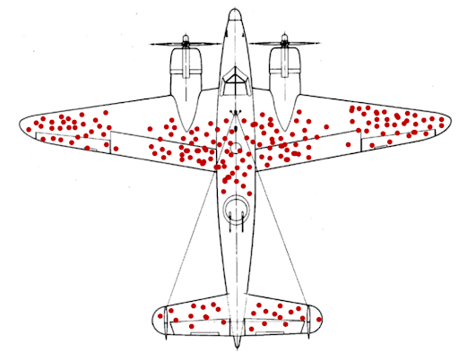

During the Second World War, aeroplanes coming back after battles showed a peculiar pattern of damage: they were mostly hit on the wings and on the centre of the fuselage (see the figure above, which is not a representation of any real data, but makes the point). Based on this, the military reckoned they needed to add additional protections on these parts. Statisticians suggested instead that protections were needed on the cockpit and on the back of the fuselage - the parts less hit. And they were right! The point is that those aeroplanes were the returning ones: aeroplanes presenting that pattern of damage were actually able to come back succesfully after battle. It was the aiprlanes hit in the other areas that were lost.
Whether the story is true or not, it is a vivid representation of survivorship bias (as well as this excellent xkcd). Each time someone is giving advice based on how they succeed, it is good to remember that one is generalising from a biased sample. In many fields, in addition, success is partly (or mostly, see again the xkcd comic), based on luck or on reasons that can be hardly linked to the success itself, which is a good moment to mention success in academia. The big professor that was interested in X from school? The brilliant researcher that takes a walk every morning? The 12-papers-a-year postdoc that meditate? The 10 rules for juggling academic job and family? (I swear I am not referring to any real example here. Really.)
Maybe we need to also consider advice from the unsuccessful cases. Thus, I will start the succumbership bias series with my resignation from the role of coordinator of the Cultural Evolution Society publishing committee. The goal of the publishing committee was to start a society journal. After a couple of years, there has not been any progress.
A short summary: the 7th June 2013 (more than seven years ago), I wrote on my old blog the post “Journal of Cultural Evolution”, anyone?. The post received a quite positive reaction, and various people thought it was a good idea. In 2014, at the EHBEA conference in Bristol, we had a first meeting to discuss the project, and possibly to start to do something concrete in this direction. Nothing much happened, but in 2017, at the first conference of the Cultural Evolution Society in Jena, we had another meeting about the possibility of the journal, and shortly after, the publishing committee started to ponder various options. Today, the Cultural Evolution Society is having a meeting in which I presented (indirectly) my resignation, and it should be discussed what will be done (if anything) with the journal.
So here a few thoughts, quite specifically linked to the journal topic, this time influenced by the succumbership bias!
-
You surely saw these quotes about “dreaming big” and “following your dreams”, and so on. But from the succumberhsip bias point of view, it may be better to have realistic goals, and not be too ambitious. We wanted an open access, self-published journal, we even discussed whether publishing directly the submissions and having online, voluntary, reviews. We did not want to restrict the scope of the journal to usual scientific articles, but having space for datasets, ethnography, commentaries. We wanted to “culturally evolve” the publishing system (a usual quote from CT). Perhaps we should have contacted Elsevier with “hey, do you want to publish the Journal of Cultural Evolution?”
-
All of the members of the publishing committee - including yours truly - were working on this project in the spare time. Given the extent of the project I now think it would have been better to have a small group of people committed, and able to focus almost full time for a short period on it. This is not a criticism of our work (we did what we could!), but maybe something the Cultural Evolution Society can think about for the future?
-
Then there are these quotes about many heads that are better than one, the plurality of opinions. Within the few heads of the publishing committee we had slightly different opinions about a wealth of topics (open science? Diversity and inclusivity? Independence? All of them? Can we? Shall we volunteer for this? No? But where do we find the money?). Not insurmountable, but maybe, just maybe, sometimes may be good to be all in agreement.
-
This mostly relates to me. I am not exactly the best person concerning PR and networking, and I did not have strong links with the headquarters of the society. A better-connected person could have probably done a better job.
-
You know that good things need time and it is important to be patient. If the project is good, one waits and, in the end, it will succeed. Or so says the survivor. Perhaps I should have suspected that, if the project was moving so slowly (remember the first idea was in 2013), something was not right.
-
Related to the above, incentives change with time. In particular, one of the main reason to think about a journal for cultural evolution in 2013 was the absence of other, related, venues of publications. Today we have Nature Human Behaviour, Evolutionary Human Sciences, Evolutionary Perspectives on Imaginative Culture, the “Cultural Evolution” collection in Palgrave’s Humanities and Social Sciences Communications and probably others that I am forgetting (excluding here journals that were already present in 2013 and publishing cultural evolution stuff, such as Cliodynamics, Evolution and Human Behavior, or the Journal of Cognition and Culture among others).
In any case, I still hope that a self-published, and possibly innovative, journal of the Cultural Evolution Society will appear (who knows, maybe on this moment the executive committee is turning down my resignation and allocating bazillion dollars for the project). Good luck to them/us and thank you to the people that tried with me to carry this forward!
ps: Of course, the succumbership bias is as bad as the survivorship bias.
pps: Thank you to the people that shared kind words with me and, yes, it is not that bad, but honestly I did hope to be able to create this journal one day…